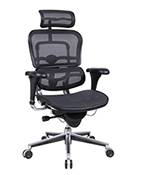
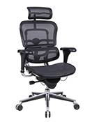
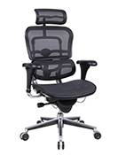
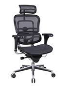

 

Ladies, let’s keep these numbers up; come on, I know you can do this. This is our time, our moment: all that our great great great grandmothers have fought for, we owe this to them. I don’t want to see anyone reaching any less than their full potential. Every. Single. Day!
They hear Sheryl’s motivational speeches in the early morning, while everyone is still in bed, ready to jump back in action after a not so well slept night. The nocturnals keep them up sometimes, but their moaning has become something as usual as hearing the metro stops being said in the speaker by that lady whose voice does not seem real, you already know how she will pronounce every letter and sound. Sheryl continues:
Remember what I always say, the answer is stay in the workforce. Try to repeat this one with me ‘I will stay in the workforce, I will stay in workforce no matter what’.
And then she said the last part, the one she repeated every day, with no exception:
And I hope that you - yes, you - have the ambition to lean in to your career and run the world. Because the world needs you to change it.
She would say this in a different tone of voice, after a long pause and in a slow, calm, and one would almost say, patronising way. S struggled to open her eyes, all she wanted was to stay in bed with her eyes closed. How long has it been since she’d stay in bed awake, rolling from one side to another, drifting between a light sleep and pure laziness? It’s hard to think about how that feels now. Now that we have reached our full potentials. She looked to the side and her partner, G, was on the other side of the bed facing back to her. She noticed how her waist and her hips formed a Lombard Street-like curve, how her hair was like a waterfall down the pillow. G’s legs moved slowly inside the duvet, letting S know she was awake. S reached for G’s hand and felt it warm, moving it towards her own breast, caressing her nipple that was getting hard. G quickly withdrew her hand and sat on the bed, still facing back to her partner.
What are you doing? Save this energy for the Orgasmify, we have to get up and get started.
You are right, the energy…
They got up, got dressed and walked towards their Orgasmify; the nocturnals were probably finishing up their shift. The headquarters looked like the hipster start-up dream. The walls were made of glass and plants came out of ceiling, there were colourful design chairs around the hallway, like those ones you curl up to read in. It was a big building right in the city centre, with a courtyard in the middle. In the different bars and cafeterias, you could always find the finest coffee, the best fruits and detox juices. This was all, of course, to help them reach their full potential, even though it was marketed as the best life they were living. It was easy to get around the place without ever needing to leave. Why would you? There was a lot of work to be done. Convenience and effectiveness were cherished words. Besides, this was the furthest a group of women had ever gotten in society, this is a win to celebrate! Orgasmify would be the world’s future soon, and there would be no need for strolls around the city. Not when you make living loving. Loving, — or coming — to be more precise. G was sipping on an espresso went they entered the room where their Orgasmify was in. J and F, the nocturnals, were just finishing.
Give us a second, please, I think J has another one until she’s finished. Ok darling, I am going to press it again, are you ready? One. Two. Three.
From the Orgasmify a moan was heard, a sound that made a perfect O in J’s mouth and in the air. A heavy breathing followed, and then a ping sound, like the microwave when your food is ready. S took in the air through her nose and inspired a deep and long sniff. As even when you capitalise everything, when you make profit out of orgasms, when you lay all your love in your work, we don’t stop being humans, we don’t stop being animals, hungry for flesh, driven by instinct. And we smell. S took in this sniff with eyes closed, and she could feel the sex, she could smell the fluids, the countless orgasms that had been had in the past hours, the warmth of the skin, the saltiness of the sweat. It brought her back to when her and G still lived in their own little studio, before they started working together. This smell on long Sunday mornings, foggy windows and blinders half opened. This smell. G lied down.
Alright, me first? Since you’re daydreaming over there.
S sat next to the orgasmify and observed her partner’s data with a robotic enthusiasm.
Ok, so your levels are good, acidity alright, blood pressure maybe a little bit too high so we will put on some soothing tunes over here, muscle response is perfect, so you’re almost ready to go.
Pause. They looked at each other and they could feel each other’s energy, their love communicated by the mechanical movements with which S operated the Orgasmify, that at the same time felt like the most organic thing, as it does when you familiarise yourself with your routine so much your body performs as one autonomous machine, your head no longer in the space, your looking at yourself from above, floating. As if they have been doing this all their lives. When you chose a cause you believe in to put your blood, sweat and tears, the cause merges with you, you with the cause. The way they put their love to use was through Orgasmify, there was no better way. G could sense that beyond tiredness, there was more in S’s mind. This filled G with frustration, they had everything they could ask for and were lucky enough to be selected to serve the greatest business for women empowerment today. She was giving it all of herself, and expected her partner to do the same.
What’s up with you today? First this morning, now you’re acting weird… You know how this month we have been low on our numbers, and Sheryl is counting on us. We can’t let these women down! Do I need to go through this again with you? Touch is unpredictable, it created different waves of pleasures, it makes the body respond in a roller coaster type of way, and it will mess up the Orgasmify and our count. Please just focus, ok?
I thought we started doing this because we loved it.
Well, use that energy into making love count, alright?
G turned her head away, closed the small doors and comfortably adjusted herself in the machine that would take her orgone energy into the central power accumulator, and later sold: to turn on light bulbs, to power ovens and charge phones, to make cars drive and planes fly. Orgasmify started when Sheryl Sandberg, then COO of Facebook, decided it was time for her ultimate Lean In and was tired of only sticking to social media. For her, it was time women really took control of the world. That’s when Sheryl discovered Wilhem Reich’s masterpiece and life long research work: the organ accumulator. In the 1940’s, the Austrian psychoanalyst had designed and constructed a box-like machine that took orgasmic energy from the atmosphere and placed it in this box, concentrated for someone to take and absorve. The patient and user of the organ simply had to step in the accumulator, (that consisted of a rectangular box the size of a dressing room and with a chair inside) put on a strange looking triangular hat, and sit inside waiting for the mind and the body to absolve the healing energy of orgasms present in the atmosphere. In a time of sexual repression and approaching war, Reich’s idea was to liberate people and societies through the power of sexual pleasure, of the orgasm, since he believed that sexual frustration fostered empathy, and empathy paved way for totalitarianism. After moving to the US in the 50’s, he spur a sexual revolution in the time of the Beat generation. Many famous American avant-garde minds used the organ accumulator. William S. Burroughs said about it the first time tried that,
When I went into the accumulator and sat down I noticed a special silence that you sometimes feel in deep woods, sometimes on a city street, a hum that is more rhythmic vibration than a sound. My skin prickled and I experienced an aphrodisiac effect similar to good strong weed. No doubt about it, orgones are as definite a force as electricity. After using the accumulator for several days my energy came back to normal. I began to eat and could not sleep more than eight hours. I was out of the post cure drag.
After being imprisoned for this controversial and immoral — at the time — research, Reich’s legacy disappeared until the late 60’s when it served as an inspiration for the sexual revolution in the Summer of Love times. But the hype wasn’t long and the orgone energy had fallen into the pit of oblivion. Until a few years ago when Sheryl stumbled upon Reich’s documents and research, and this discovery changed her life forever. After employing a series of scientists to look into the orgasmic energy and what it could bring to world, Sheryl discovered that it was finally women’s time to reach their full potential: and, most importantly, she could make big money with this. For Sheryl, there is no better expression of feminism than having women in top positions of the corporate world. Sheryl truly believes that the main issue in the world, and that she wants to change, is that there are not enough CEO women in the top Fortune 500. If women can take control of the businesses, they can take control of what people buy, the tools they use, the way they live their lives. Orgasmify’s mission is to take women to the top, high up in the sky like the sun, shining a light on the world, while powering it with the energy of our bodies and making it their life missions. Female empowerment meets the capitalisation of bodily sensorial experience. And so after reconstructing Reich’s plans, building new machines with slicker, more appealing design, Orgasmify was born. People had long forgotten about the original organ accumulator, so Sheryl had the chance to construct her own alternative facts concerning the machine’s origin. But most importantly, the machine’s inventor. The weaker sex shall not be praised. With a new organ accumulator rebuilt and designed, Sheryl presented Orgasmify to the world. The form was similar to its original concept: a dressing-room sized box, but only this one was vulva shaped, a thin oval that opened the doors that were the labia. The little window for partner interaction was just at the top, in the clitoris — as women should always be at the top and in the centre of pleasure (and profit). The energy was collected through the chair, that had an elevation where the middle of your legs would be. Sheryl managed to take the company to a top level industry, by making double the profit of other companies, since her employees were partners of one another, lived in the building, and were basically making money out of their pleasure. Isn’t that a dream? Sheryl’s relationship with the President also made the business boom through governmental deals, as they were both on the same fight together, struggling to take over the system, put women on the top. They were on very good terms with each other, and shared more than just common ideals. Their help to each other comes in forms of lobbying, trade unions forming, big investments, partnership laws and orgasms. S and G reached about one hundred orgasms together and their count for the day was average. S was feeling exhausted and thought about bubble baths when the sun is setting and the bathroom white tiles turn orange.
We have to make this work better tomorrow, if the other couples are doing better we will hear from Sheryl.
Don’t you want to, maybe… take a day off?
Sorry, what? We are already getting off all the time.
S and G were hired by Orgasmify but still worked on a freelancing sort of way, a business model that Sheryl had adopted to increase the productivity and competitiveness amongst the workers. Orgasmify believed in the power of our individuality in the sense that when we are responsible for our own path, women are able to really reach our full potential, for ourselves. To Lean In is to rely on yourself because you trust in our power, in this case, quite literally. For millennia women were denied the chance and opportunity to compete in business and governmental positions, to reach higher levels of leadership — now that we have reached our full potential, it was time for women to step up, to finally take what is theirs: and not just ask for it. Having the company functioning by partners that work together and at the same time compete against other couples created an atmosphere of ambitiousness that Sheryl wished for all women in the world. If they did well and came a lot, they would feel fulfilled sexually, emotionally and professionally. At last, the circle is closed. S let her self fall on her back into their bed and passed her fingers lightly through her stomach, felt the inside of her belly button and then down stroking her pubic hair while going deeper until she could feel her labia. She just kept her fingers there without moving them, warming her hand. By the time she had taken her third deep breath, her eyes were closed and she fell asleep.
And remember, as I always say, it is the ultimate luxury to combine passion and contribution. Keep up the good work — but you don't need me tell you this. You have all the power in you to make this a better world while using your own pleasure. Let’s do this!
. Sheryl finished her usual morning pep talk. She got in the car and drove headed to a meeting to catch up on with Hillary — her partner in this quest.
It seems that Orgasmify is doing brilliantly, Sheryl. Well done. I think we will be able to approve your proposal and soon 100% of the country’s energy supply will come out of love and orgasmic energy. This is brilliant!
Hillary ended the handshake by placing her left hand gently on Sheryl’s hand, as if she didn’t want to let go, as if she wanted to feel her soft hand more. They made eye contact and Sheryl pierced Hillary with her dark big eyes, eyes that wanted her. She quickly looked behind to the body guard standing behind her, a woman with ginger hair tied in a pony tail, with wide shoulders and hands behind her back. And then back to Hillary:
Thank you Hillary, I would not be able to do this without you. And of course you will have your part of the deal as well.
Sheryl was now squeezing Hillary’s arm tight, with the hand that had climber up from the handshake. The tightness said I want you, get her out.
It is an absolute pleasure to do business with women like you, Sheryl. I am particularly looking forward to my bonus.
She quirked a side smile, with horny eyes that wanted to sit her tight ass on her desk and spread her legs open right there. But a President must behave.
You will have it. In time. I should run back now, people are expecting me to be present at all times.
Sheryl understood the cue, but a CEO must behave. She had to keep the bodiless persona that had given her the success. The motivational, strong, independent, rational and effective woman that got the job done. But yet these strange feelings came when she met Hillary, sensations that started in her toes, climbed her legs and up to her clitoris. A fire that went to her head and made her skin filled with goosebumps. She had forgotten for so long the human touch, the pure and simple warmness of someone else’s skin against hers. Something her Orgasmify had never given her. Vulnerability. Sheryl looked down, which she rarely did, and left the room closing the door behind her. It didn’t take five seconds and her phone beeped with a message sound, it was Hillary.
Midnight at the park
, that was all that it said.In the middle of the night, on their bed, S and G laid next to each other without saying a word, even though they both knew they were awake. Insomnia had begun shortly after starting at Orgasmify, a symptom of the anxiety they experienced everyday, an uneasiness towards everyone, the nocturnals, each other, themselves. An anxiety that they were trying to fight and negate, because, after all, they were living their best lives, doing what they loved, and yet the idea of what that love was was getting more and more confusing.
Sheryl’s words echoed in their minds, the words they joined Orgasmify for: to do what you love while making women the most powerful and influential force of the country. To be strong and stable. Why would they admit that they were unhappy making a living out of producing orgasms? S didn’t feel like she could share these feelings, mainly because she felt like they wouldn’t be welcomed. And she was angry at herself, for being so fucking selfish and ungrateful towards a company that had given the platform and the tools to become an example to follow in the feminist struggle. Even though she was surrounded by other women, she had never felt so lonely. Trying to constantly be a better version of herself, with more powerful orgasms, intense pleasure, come again and again, oh this will be a beautiful amazing one that you will love, oh but it wasn’t. Just pure exhaustion, legs shaking, hands trembling, sweat drips for the middle of your breasts, uneasiness takes over. Is that an orgasm? Guess it was another anxiety attack, it’s difficult to distinguish these two nowadays. Perhaps the nation is running on stress and not pleasure. S wouldn’t know, she forgot how to tell them apart. And as she looked to her side, she wondered if G was experiencing the same confusion, but it was impossible to tell, it was impossible to tell anything by her expressionless face, her determined eyes and closed mouth, like she was an impenetrable wall, a steel woman. That lets nothing and no one break her down.
Hey, G, are you awake?
Yes. Yes I am.
I want to say that I love you.
I love you too.
Don’t you feel that sometimes we are losing the connection with our bodies, with our minds, our emotions? That this is so called pleasure is transforming into a tool, that we are no longer nature but something outside of it, while at the same time our love and work are equivalent and we can’t even distinguish emotions and feelings anymore?
Stop listening to your body and start listening to your mind. You’re being sexist. Women can and should be perfectly rational too.
That’s not what I was talking about!
S felt that Sheryl had taken over G’s body, that her partner had vanished into the free market dream, no longer able to make decisions or think for her own. The same dream that assigns what is most human about human beings – our minds and our volition – to algorithms and markets, leaving us to mimic, zombie-like, the shrunken idealisations of economic models. Radically upgrading the price system into a kind of social omniscience means radically downgrading the importance of our individual capacity to reason – our ability to provide and evaluate justifications for our actions and beliefs. Was this that Sheryl had always idealised? Is this what GRL PWR means? As S closed her eyes and imaged G naked in their old bathtub, washing herself and covering her pink pointy nipples with rose scented foam, while smiling and calling for S to join her, she felt that it was time to answer these questions her partner no longer could help her with. Meanwhile, on the periphery of the city, where the pace slows down and there is darkness, Sheryl and Hillary were meeting in the park. This was the only place they could go to that would be dark enough for them not to be seen, dark enough to disable the ceaseless calling to go back to work, brought by the constant ever so bright office lights in the tall buildings, showing that not even the night could defeat the great oh so mighty strength of hard work and fulfilled potentials. In the city there is no night and there is not darkness. No sleep or rest. Only working, being awake and producing. As soon as Sheryl crossed looks with Hillary at the distance, the tingling feeling came almost instantly. She found herself floating above the crushed leaves on the Autumn floor while making her way to her partner. Hillary was half eyed down on the floor, over a checkered blanket.
Hello, my dear… at last, by ourselves. Please, lie down. This is a special, magical blanket, you know? Once I had a threesome with Donald and Kellyanne on this baby. Cool right? Well now that he is rotting in prison it’s even fucking cooler.
Wow, I had no idea about this.
Lovely, lovely Sheryl… there is so much about me you don’t know. So many things left to discover, places to explore… dark, wet, deep places. Come here.
Hillary did a gesture with her index finger, indicating Sheryl to come closer. Sheryl felt hypnotised by Hillary’s energy, something that confused her as it was so outside of what she was used to, sensations she had never felt before, that she couldn't account for, a power almost alien to what her mind was used to. It was as if her brain emptied and her body was the one taking over, which seemed wrong, scary but tempting at the same time. She came closed and Hillary leaned her head in and whispered in her ear:
Tonight I will make you come so hard you will forget who you are.
She then put her tongue out and tickled Sheryl’s ear, licking it and bitting her lobe. Sheryl’s tingling got bigger and now she wasn’t sure if it was an anxiety attack or what the fuck it was. So she couldn't say anything, words couldn't form in her mind and the only thing that came out of her mouth was a long deep exhale and a reach for Hillary’s mouth, and they kissed. Their bodies were so close to each other it was as if Sheryl could feel Hillary’s tingling as well. Hillary buttoned down Sheryl’s shirt and reached out for her perky, firm breasts, that were swollen, with her heart beating fast and intensely underneath. Her hand continued to go down, until she reached her inner thighs from underneath Sheryl’s skirt. Sheryl wasn’t sure if her strong heart beat was normal and that confusing her and at the same time she wanted more. It reminded her of the adrenaline of an important deadline to deliver. Or the rush that goes through her veins when she writes an angry email. Nevertheless, Hillary’s power over her was too strong and she gave in to her senses, letting herself go and succumb to the night pleasures of the magic blanket. Just after a few minutes, the two women were both naked and had already licked each other in every surface of their bodies possible, and Sheryl’s mind began to empty slowly, and gradually she became her body. no longer there was Sheryl and Sheryl’s body, but one person, one body, feeling completely every single cell of Hillary’s touch. All of a sudden, Sheryl felt something making its way inside her, and as she looked down, Hillary was inserting a big, black vibrator in her, moving her hand and playing with the different speeds.
This is something the Russians discovered and not even the general public has access to. top of the line, A.I sex toy. It learns your body responses even before you do, and then moulds itself to be the perfect one for you. Since you’re my special Orgasmify lady, I thought you can only have the best of the orgasms.
And as she finished her sentence, she pushed the toy further inside Sheryl, and she let out a timid moan. Since Sheryl had started Orgasmify, she hadn’t have a single orgasm. And she almost forgot how those felt, as the only thing she was interested in knowing was how much energy could be converted in one orgasm, what was the quality, what type, how many Watts it produced. In fact, Sheryl knew all about orgasms but not how it felt like to experience one. Even though she was the CEO of Orgasmify, she never dud the actual work that the energy producers did. She had been born to be a leader, a woman boss, and had been through enough when working for Facebook, never making it to the CEO position. This was her fucking time and no one would boss her around. And again her mind showed up, her brain took over and she could again feel the separation Sheryl and Sheryl’s body. Sheryl was starting to come back take over her body. But then she looked at Hillary, touching herself and her at the same time, and she really wanted to come back to the ecstasy she was in just minutes ago. She closed her eyes and tried to focus on the toy moving inside her, and doing the breathing exercises she had learnt in pilates class. She reached out and touched Hillary, hoping that pleasuring her partner would take her out of her head. After a while, Hillary had reached orgasm multiple times and still nothing in Sheryl’s body, too much in her mind. Hillary noticed she looked strange, she had a frown of concern in her face, one that wasn't the frown of orgasmic pleasure.
What’s wrong, my love? You don’t like my toy?
No, I love it, and I want you… I just… I just can’t come. I haven't had an orgasm in years.
What do you mean? You founded Orgasmify.
Yes, I know that. It seems like orgasms have been in my mind too much, I can’t turn off my work mode, they have been such a big part of my life, of my career, that when I am close to coming it is as if my brain takes over and all I can see is numbers, values, watts. I should go. Perhaps to the office. This just probably means I am stressed about this deadline coming up so I should get to it.
And Sheryl starts to get dressed.
What? That’s crazy. Intimacy and pleasure are beautiful things. They can’t be translated into watts.
And she touched Sheryl’s leg with a soft hand.
Yes, Hillary, they can. That’s what Orgasmify, that you helped funding, does. I can’t come, it would be too wasteful to do it for nothing. We can’t afford that. I’m sorry. You really are amazing.
And Sheryl ran though the bushes and disappeared into the park’s darknes. The city light were waiting, she had a cause to fight for.
You’re doing great, darling. So proud of you
. S pretended to had paid attention to G’s performance.
Thanks, babe. Glad you’re my partner. Really. It is so rewarding to have the opportunity to make a difference. Creating energy! Empowered women!
G was smiling, the corporate feminism had really gotten to her. She was getting off with capitalism. As S sat down and tried to relax with some breathing exercises in the Orgasmify as G continued:
You know I have been reading Sheryl’s new book, what a true Bible of female emancipation. It’s called
Really Really Lean In Right Now
. Awesome right? She is such a queen. I am thinking I might drop her office this weekend and ask her to sign it for me. Original title, S thought sarcastically. And as she finished her first orgasm, she turned to G:
Speaking of weekend. Maybe we can take tomorrow off and go somewhere for a mini-holiday? Cabin in the woods, fire place, hot cocoa, enjoy a nice book, cuddle all morning… Saw this great place on Airbnb upstate that is available! And get out of here for a bit? Haven’t you had enough of Sheryl? Or worshiping her like some sort of corporate goddess?
Oh I’m sorry S… some of us don’t get enough of fucking female empowerment! How do you expect things to actually change if you lounging your ass in a woods cabin? Real work needs go get done.
What change? Is this fucking change? Cause it seems to me that’s pretty much the same shit.
Excuse me? You think having women producing this country’s energy is the same shit as it was before? Open your fucking eyes, S. Sheryl — and all of us, for that matter — is giving us the opportunity to reach our full potential as women, she’s putting female emancipation on the spot light. And things don't happen in a blink of an eye. You need to work for it. How can you go on holidays knowing that over here we are working so hard to make a difference?
S took a deep breath.
Look. I understand you want to make a difference and I do too. I really do. But I am just wondering if working like crazy as we are is helping anything. I feel tired. I need some rest. I am sure you do too. I am scared as well, I’m scared of failing and making mistakes. I’m constantly wondering if I am good enough, constantly comparing us to the nocturnals in our room. I know you are too. But I also want to do this right, I want to make all the women justice. I’m confused. Guess I just hoping we could re-charge for a bit.
Re-charge? I feel charged every time I step into the Orgasmify. How do you even have capacity to think of coming outside of it? I shiver every time I think of the waste now. To think that we were wasting this potential back in the old days, at our old studio…
G was convinced of her truth, and S felt like she was losing her to the cause, more and more each day. She continued
Any way I don’t know how can you desire the human touch, so pointless, when you can have endless pleasure that powers the world.
S was just about to say that G was not getting off with saving the human species from darkness nor with female empowerment. S understood that G, probably much like Sheryl, was actually aroused by productivity, and only Orgasmify could make her satisfied now. A wave of sadnesss stroke S like the biggest wave of the stormy winter. Now she wasn’t the sea weed drifting. She was just herself. Getting hit in the shore.
You know what? Nevermind. This was a silly idea. Let’s just back to work, shall we? Don’t want to get behind in our numbers! Promised my mom I’d go back home for Christmas this year.
That’s the spirit, girl! Think of how lucky we are.
So, so lucky.
S closed her eyes and let her mind go off somewhere else, let the day dreaming save her sanity. She thought about a hot summer evening when all that she and G did was to kiss every single surface of each other body and run ice cubes through their bodies, one by one, until they disappeared in their pores and in the bed sheets. S remembers feeling pleasure like nothing she felt before. Or since then. Back in her office, Sheryl was still thinking about the night before. Getting so close to Hillary had made her somewhat vulnerable; the touch of a woman, of a human, revealing all the pores and nerves she fights so hard to hide everyday. It was difficult to describe what was it exactly about Hillary that made her so unstable, so willing to give in to the instinct, so emotional. It felt good but like a failure. All the intensive workshops, the retreats, the round-tables, couldn't make her the steel woman she wanted to be. Or at least, at all times. But for now, Sheryl is sitting in the chair that she claims was the inspiration for Orgasmify. Her computer screen filled with reports is just white noise, as she is trying her best not to bite every finger nail. Earlier that morning, one of the cleaning-gentleman had found a folder no one was suppose to find. While cleaning the archives and other old dusty stuff, he came across the original Reich’s plans, research and drawings. The archive supervisor spotted him looking through the files in the cctv cameras and immediately called him in to her office. There are only three people that know of the true origin of Orgasmify, not the story Sheryl tells in her new novel: Sheryl, the archive supervisor and the chief of operations. All three of them swore to never tell a single soul that a man had invented the technology behind Orgasmify, and until this very day they kept it possible. No one knows what was the conversation like between the cleaning-gentleman and the archive supervisor. All that is known is that he was never seen ever again. Sheryl wanted to feel comfort in her colleague’s promise that this information wouldn’t be leaked. But the vulnerability she had been exposed to the night before made her a little bit more aware of her own intuition. And right now, the intuition was a roar in her stomach and a tic tac in her mind. The phone rang and Sheryl saw the name she was dreading to see on her screen. She picked up.
Hi darling, how are you? Listen, sorry I stormed out last night. It was great, really. I’m still trying to recover!
, she let out a nervous laugh. On the other side of the line, silence, followed by a heavy deep breath, like the one you take to prepare yourself before you announce something that doesn't want to come out, a frivolous attempt to calm down. And then an assertive voice:
I know, Sheryl. There has been a leak. They’re threatening to spread to the media now. We have got to do something to stop this, otherwise I'm out. I fought too hard for this, I’m not letting you take me out of spotlight. Not over some orgasms I’m not.
Sheryl couldn't vocalise any words, only mumbling came out of her mouth. Hillary continued.
How could you lie about this? How could you keep this facade for so long? But worse! You took a man’s invention for your so-called feminist cause!
Sheryl gained strength to speak.
I had no choice, his invention was too good, I couldn't afford not to use it! Besides, does it matter? Orgasmify has been a life-changing technology. And about the media, I still have a lot of contacts from my Facebook time. I’ll make a couple of phone calls and it’s not an issue. Trust me.
Sheryl wanted to sound in control of the situation, like she always is.
How can I trust you again, Sheryl? I don't know if this feminist Government can engage in this now.
What about our motto together? If you're offered a seat on a rocket ship, don't ask what seat! Just get on. Let’s get on!
Sheryl tried to put some positivity in the conversation, but Hillary was not biting it.
Well Sheryl, I’m not getting in this Challenger with you. You can explode on your own.
Sheryl sensed that Hillary was about to hang up:
Hillary, wait! I will come up with a plan. I will come over tomorrow to your office. Just give me this one chance, please.
You’ve got a one hour meeting to convince me.
The sun had set when they finished their shift and they were starving. G suggested that she’d go down to the Orgasmaurant and grab them some take out to eat in their flat. S agreed, she was craving a stir fry. They walked opposite ways in the glass covered hallways of the building, S saw G disappear behind the lift door that closed. S started walking towards their small studio, a few steps away from their Orgasmify room. Since she was alone, she decided to take a walk around. That had always helped her to clear her mind, and since she didn’t want to give G any more explanations about her apparent laziness, the Orgasmify was her best chance: she wouldn’t go far and it was big enough. The glass walls made the lightbulb reflect in a way that you couldn’t tell the reflections and the objects apart, what was real and what was the projection. Some women were eating in the lounge chairs, some drinking smoothies and walking around. S noticed how she didn’t know half of the women here. Apart from G, there was hardly anyone she’d talk to, except for the occasional chit chat with the nocturnals in their shift change or in the rare company meetings that came with drinks afterwards. And even in those occasions, the air was always filled with a toxic atmosphere, an energy that kept the conversations as superficial as possible and made the women always talk about the same things, orgasms. The counts they had, the biggest object they powered with them. They never shared anything personal, never made any connections, never hugged each other. All their energy was to be saved for coming. To reach their full potential. Oh yes, they also talked about Sheryl a lot. And Hillary. And all the women they idolise like queens, which was what they literally call them. One time S tried to make a friend, but quickly realised that she had befriended S because of her high count that month, and was hoping to get a few shifts with her. Whenever S tried to bring up her feelings or reaching for help she was ignored or put in an awkward position: are you some kind of sexist? You don’t think women can make it through all of this on their own? Don’t you believe in female empowerment? And as she ran all these thoughts through her mind, she realised she had walked towards parts of the building she didn’t know, she had gone down the stairs to the underground levels where the servers and some of the machinery was, as well as random facilities like the laundry room and the meditation room. A few years ago, when eastern alternative medicine was in vogue, Orgasmify had set this up but it was hardly used anymore. The women had become too busy as the company grew. S had even forgotten about it if wouldn’t have been for a noise she’d heard coming from the door, oh someone is actually using the meditation room, what a fucking miracle. The door was slightly open and S could see the warm light and soft red carpeted floor through that crack. She walked towards it and peeked inside: she couldn’t believe her eyes. It was a woman coming. A woman having an orgasm. Without anything to collect it, no Orgasmify, no nothing. She was completely naked and lied on the floor. There was incense and candles lit and the women rested her curly caramel hair on a velvet, burgundy coloured pillow. Her skin was covered in freckles and spots, like someone had drew a pattern on her skin. S was amazed, this was a sight she hadn’t seen in years. She couldn’t help but just stay there and watch this woman pleasuring herself over and over again, apparently with something inside her that could move on its own, some kind of smart vibrator, and apparently just for the sake of it. She looked happy and vulnerable, as if giving herself completely to her body. After a few minutes of voyeurism, S felt a tingling going through her body, she couldn’t remember the last time she felt that way. Something was urging her to come inside. The woman was too into her own pleasure and she couldn't notice S’s presence as she stepped into the carpeted floor. And S just felt like joining her: for the first time in years, something incalculable had push her into a decision, her subjective body taken over her logic and empirical thinking. The woman was still pleasuring herself with her eyes closed, and S undressed herself and came close. She lied next to the woman and first touched her hand, so it wouldn't be an aggressive approach. She stroke the open palm of her hand and then ran her fingers through hers. So V opened her eyes and there was this woman, naked lied next to her with olive glowing skin and charcoal black hair, looking at her as if she had found the holy grail. There was silence and neither said a word, just touched each other in every inch of their body, feeling each other’s skin with their fingertips, and then with gently kisses, until S slid her hand inside of V’s thighs, caressing her labia, taking out her strange smart dildo out of her, only to hands and fingers and licks and kisses. Neither of them looked confused, neither of them asked any questions. No rational thinking went through their brains, there was a total and complete absence of a rational brain. It was pure pleasure, nothingness. When they got tired and their bodies gave in, they went back to lie next to each other, still naked and with a puffy breath. Like a calm sea, they fell into a light sleep.
So is this your usual evening plans? Storming in someone like this?
, V said with a grin. S felt embarrassed and confused, completely stroke by this woman’s confidence. And then the guilt. The guilt that hit her like heavy rain and cold wind on your hands. The guild that’s a shredder inside your stomach, eating your own flesh. She stood up, went around an imaginary circle and sat down again.
Cool vibrator, right? I just found it in the building! It has some kind of A.I shit. Pleased to make your acquaintance, I’m V.
S remained silent, looked down at her own bare toes, fixated in a tiny mole on her foot, eyes like glass.
That’s an odd reaction, you seamed to be really enjoying yourself five minutes ago
.
And I did. But. Orgasmify! Our count… we just wasted so much energy, probably thousands of watts. This will definitely affect my numbers tomorrow. And I hate that I feel this way about it. And it’s not even about G, it’s about the orgasms. Feel like I can hear fucking Sheryl preaching in my mind, about being the best version of ourselves and how lucky I am to be doing the thing I love… I just threw hours of away, for nothing. Sorry, I’m S. Orgasmify 809, in the East Wing.
S felt an uneasiness all through her system. Wasn't this what she wanted all along?
I’m V. I only started working here recently so I am feeling still a bit confused about all this, not so sure what to make of it. Tell me S, why is exactly that you think that spending time pleasuring yourself or others without being for an economic purpose is time wasted? Why this need of producing constantly?
Look, I’ve been here for a couple of years. I started working here with my partner, and we believe in Sheryl’s ideas, we really do. She seems she had the answer to tackle patriarchy, to become the white man, to take over the system! When she discovered Orgasmify it was such a breakthrough. I truly believed that feminism was taking over. But now, despite understanding her intentions, I don’t know anymore, I don’t think that using our bodies and pleasure for profit is doing anything to create a new way of working or collaborating, I feel us more distant and alienated than ever, I on the other hand, so much has been accomplished…
You think so much has been accomplished? Doesn’t it feel to you like this is exact same thing, only with Sheryl instead of a Mark or a Donald? What new powers came with being in the centre of power? It seems to me that this only became the white man capitalist dream. Endless profit.
I get you — and yet it’s not the same thing, right? Having a woman in such a power position as Sheryl is not the same as a Mark or a Donald… She did shine a light on equality, on all the things that women can do. And yet, there has to be new solutions right? New ways of thinking. One that still empowers women, but doesn't kill us working for it. I am all for women ruling, just seems that a lot of aspects weren't thought of when the opportunity to be in power came about.
Exactly. Sheryl is just repeating the same ideas: by trying to take over this system, she became it. As a so called feminist she can't comply with this neoliberal idea that we have to work until we die, even if it’s to empower women — which is not. It’s just producing producing producing, the fucking big idea. A fucking patriarchal, classist big idea.
What big idea, sorry?
Hayek. It was Hayek who showed us how to get from the hopeless condition of human partiality to the majestic objectivity of science. Hayek’s Big Idea acts as the missing link between our subjective human nature, and nature itself. In so doing, it puts any value that cannot be expressed as a price – as the verdict of a market – on an equally unsure footing, as nothing more than opinion, preference, folklore or superstition. The so called patriarchal system that Sheryl wants to fight so bad is the same as the one she’s in and stands for. The problem of trying ‘to make it’, be successful, be on top, whatever you want to call it, is that is always tainted with the same way of thinking you are trying to oppose. Contemporary values of the feminist girl boss follow the same of a neo liberal, capitalist, profit driven ones: that women have to fight and work harder to achieve the same as men, to take their positions, to ‘rule the world’. The economic and labour systems we currently move in were made by and for men, valuing rationality and objectivity as the most important qualities that one should have in their professional lives, and in the current system, in all aspects of living. Why aren’t our bodily experiences being taken into account in the same way as objectivity or productivity?
That is a big question, that probably goes way back. But is pointing fingers at Sheryl as the ‘bad feminist or fake feminist the way to move forward?
I am not pointing fingers at Sheryl — she is, at the end, a product of how commercialised feminism became, in so many ways of living that now we are even producing energy with our orgasms! If you’d tell me about this some years ago, it would have sounded great, until you really come to the core of it. When the question of female empowerment failed to look at capitalism, we got Orgasmify. And so, this neoliberalism turns a sow's ear into a silk purse by elaborating a narrative of female empowerment. Invoking the feminist critique of the family wage to justify exploitation, it harnesses the dream of women's emancipation to the engine of capital accumulation. Even Sheryl would be able to see this, and using her knowledge and experience to understand the system and turn it upside down would really start to open up possibilities for new ways to to work, collaborate, and be together. S had calmed down and her breathing was normal, a new energy was starting to take over her, the same that runs through trees’ roots in spring or the first waves of the high tide. She was finally able to look around the room, feel the soft carpet again, stare into V’s eyes and see the whole world.
Indeed I have been frustrated with this, this inner struggle, that question why is it that being the best woman possible is about working so hard, why is my pleasure being used like this, I’m wandering if I will ever be able to have a real orgasm again. And if I do, will I recognise it? We have been surrounded and drowned in Orgasmify so much it has became my life. And in a way I love it, in a way I don’t know what love is anymore. Do I love G or do I love Sheryl?
V came close to her and ran her fingers through S hair, smiling.
Now we have each other to lean on. It’s all confusing for me, too. We are going to go through it together. And with the rest of the women here — the first step is to understand we are stronger together, and throw away this horrible anxiety and paranoia eating us from inside, from having to compete against each other about who has the best orgasms. Wasn’t it all about pleasure, in the first place?
S smiled back, and picked up her watch.
Shit, I have to run.
She put on her clothes as fast and she could and stormed up the stairs.On Monday, S wouldn't go back to work.
Conducting the research for my new story was a challenge in all aspects, including my own beliefs as a proud, loud feminist. And as an ambitious one, too. How do the aspects of work and love come together was my initial question, I wanted to put the neoliberal obsession with doing what you love in a feminist lens, but this task revealed itself to be much more complex than I was expecting. I decided that field research was the best option to have a serious and true account on what really happens behind Orgasmify’s headquarters, despite all the rumours, documentaries and Vice articles on them. Sheryl’s figure as the boss guru of the modern woman was fascinating and I also wanted to know more about the women that work in this company, what driven them to join this company, what is their role, what do they think of our contemporary state of feminism. So I set off and flew in to San Francisco, where Orgasmify is based, and got a job doing maintenance in the machines, as an entry point to the company. I met wonderful women that helped me and talked to me, but the general atmosphere in the building was one of a strange stress yet gratitude. As if they had to remind themselves how to walk every step they took towards their work stations. When I met S, it was the perfect match. I found in her someone who was open, generous and able to see it was important to tell not only hers but that group’s story. She guided me through every crisp detail when I just asked her how her week was going. And the story blossomed from there, of course me adding some more plot, details, narrative. I ended up naming the last character as the company version (they only use initials, something that was never explained to me) of my own name. After the time I spent there, I probably came back with more questions than answers, and I am still trying to assimilate all the information, still trying to uncover our love for our work. I think fundamentally, there are two oppositions in feminist resistance to women’s roles in the labour landscape and society in general: the margin and the centre. I see the intensions and the value of taking the centre perspective, appropriating what was once (and still is) the place of the man, reclaiming the space that for too many years denied off women. This space is the space of leadership, of decision making, of being on the top position. I see why some women would want to show men and the world that they can do ‘their job’ as good or if not better than them, taking the positions and strategies that males created for themselves only, and owning them, inverting the roles, become the man, become the system. But are they hacking the system? Are there enough tools and escapes that enable this system to be changed according to feminist ideals or is this cause doomed as soon as it enters the centre? Taking a feminist position from the centre is what women like Sheryl, Hillary or even Thatcher do — they are iron ladies (the latter being the original iron lady). These are women that, when given a position of power and leadership, seem to chose not to question power itself. They are not changing hierarchies or structures in businesses, they are not necessarily giving more power to their employees and they are certainly not critiquing a system that profits from cheap, almost free labour and spreads positivity in being overworked and stressed. For them, women always have to ‘Lean In’. One could say, they have to ‘compensate’. But for what? Most importantly, at what cost?
These performative bodies assume the characteristics of rational, objective, emotions-free men into a women’s body, than doesn’t stop or hide her femininity either: hence the paradoxical nature of the term ‘iron lady’. It entails the preconceived notions of femininity and masculinity in one being, but there is nothing androgynous about them. These woman reinforce patriarchal stereotypes of womanhood in the way they dress, talk and communicate with their body language, but assume a position that has been traditionally taken up by men, disconnecting themselves from their subjective bodies and becoming a white man stereotype, in the hopes that, as I explained earlier, they can take the centre and the system into them. The reason why iron ladies might choose this path to represent their constituency (being a country or a multi-national company) could be because ‘Primarily, white men are capable of this political knowledge because they are the only people biologically capable of rendering their bodies invisible through cultural norms. (…) distance… delivers the president to the nation as a purified body, a man in but not of a body’. Women do not belong in the category of a neutral body, they are always ‘of a body’ and not ‘in it’. But where is the power, then? Is ‘ignoring the differences’ and becoming ‘neutral’ the answer to the end of women's oppression? Shouldn't we be question who is neutral, after all? When denying or hiding their subjectiveness and their bodily experience, iron ladies like Sheryl are continuing a discourse that is complacent with the neutrality of the white man and not creating more possibilities for different bodies to assume positions of power and leadership. I tried to emphasise this by giving Sheryl a position of high power and of an idol, almost like a cult leader. She preaches a message to all her ‘followers’, in her case employees, that believe in it so much they become too blind to see what’s really there: a human being that has her own interests and it’s using something created to cure sexual repression and totalitarian regimes into capital profit. She is no different from all the other CEO’s, unlike what the characters believe. The main issue of this way of working, of a constant pressure to network and of producing, is that eliminates the humanity is the worker, in several aspects of it. One to highlight is this idea that empowerment is ‘picking yourself up by the bootstraps’, not relying on anyone. The girl boss. To really present a change, new ways of working need to be thought of. New ways that involve collaborating, collective strength, kindness and love. I am aware that these terms all sound too subjective and vague, but a system that is excluding one’s emotions and body experiences is also excluding a big part of the human existence. This neo-liberal economy is a name for a premise that, quietly, has come to regulate all we practise and believe: that competition is the only legitimate organising principle for human activity. Constant competition to see who can work the most and for cheapest has regulated our ways of producing in such way that it is difficult to imagine another possibility. But if we are to create a feminist society, or at least one that is more feminist, it is urgent to focus on how can feminist values be applied to economy and working, not just on individual identity. And instead of recreating the economic possibilities that were created by men, it’s possible to think of other futures that value more that producing, producing, producing. These futures have to put sisterhood and self-love into the spotlight. The orgasm can set us free, just like Reich envisioned. But the orgasm that will set us free is one of guilt-free pleasure.
I hope this answers all your questions to go forward with the publishing.
Best regards, Verbenia